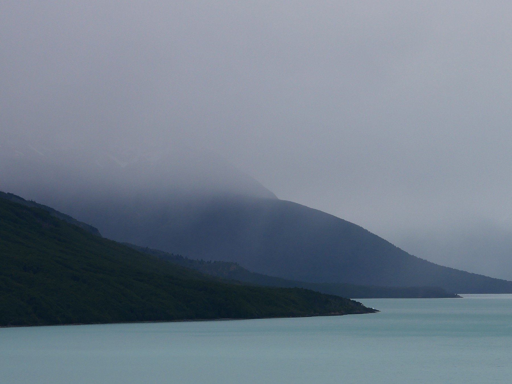
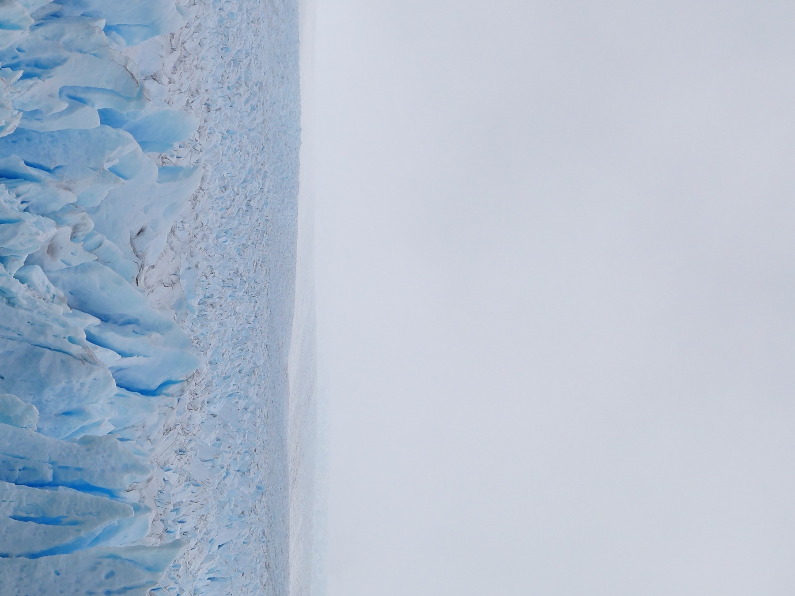
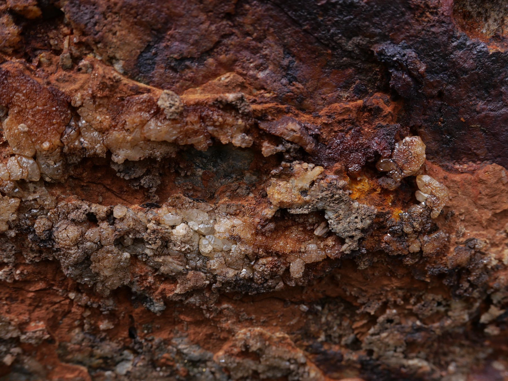
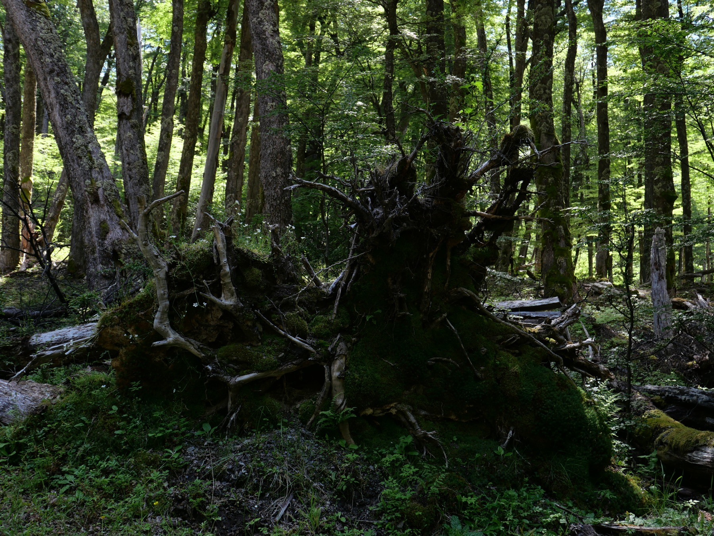
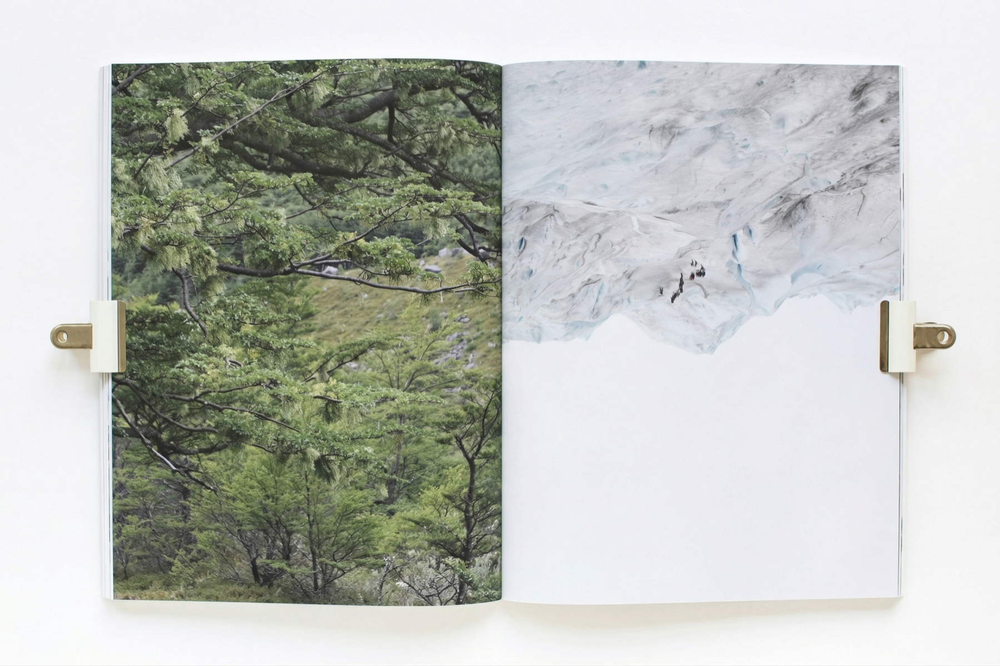

[02]
Serie Fotográfica /
El Chaltén
- Sección
- Territorio
- Material
- Fotografía
Esta serie de fotografías fue tomada durante un viaje a El Chaltén, en Santa Cruz, Patagonia Argentina. La diseñadora viajó allí para sumergirse en la naturaleza, alojándose en una reserva natural dedicada a la conservación y la investigación ambiental.





Aquí, en lo que llamamos El fin del mundo, la naturaleza revela su verdadera escala. Entre lagos, glaciares, bosques, vientos y aromas, emerge una profunda sensación de paz, como si el mundo volviera por un instante a su forma esencial. Estas fotografías buscan sostener ese momento: la sensación de encontrarse con la naturaleza y reconocerse como una pequeña parte de algo inmenso.
